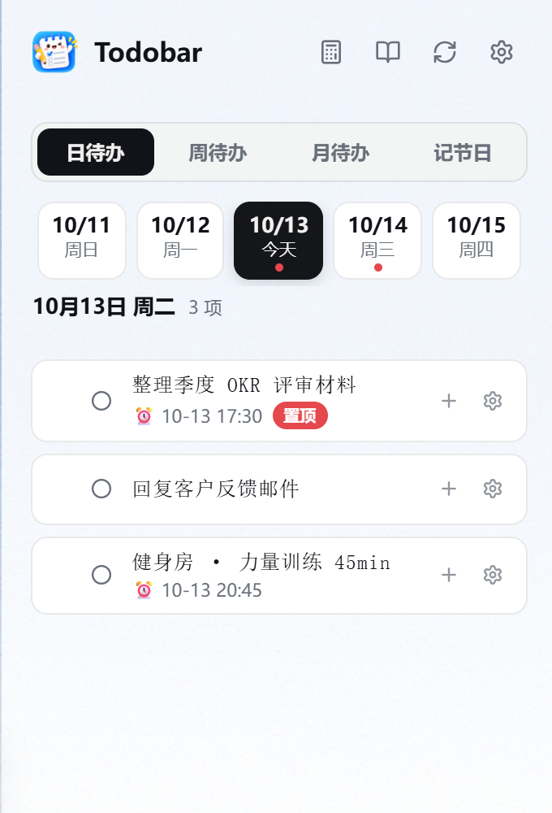
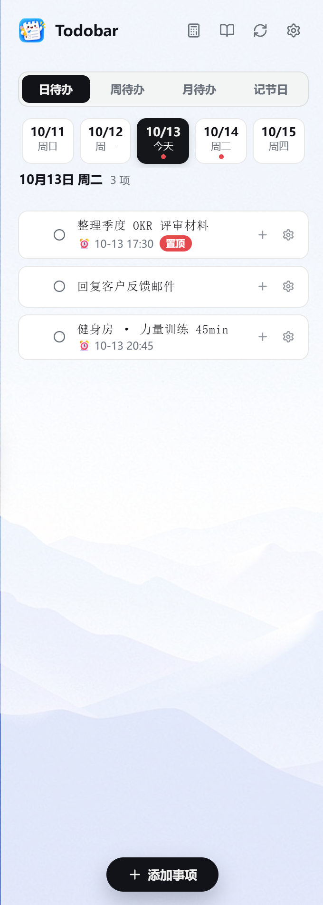
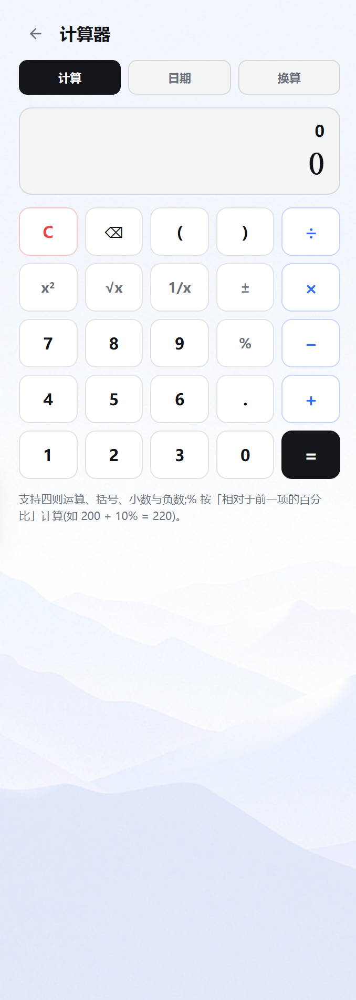
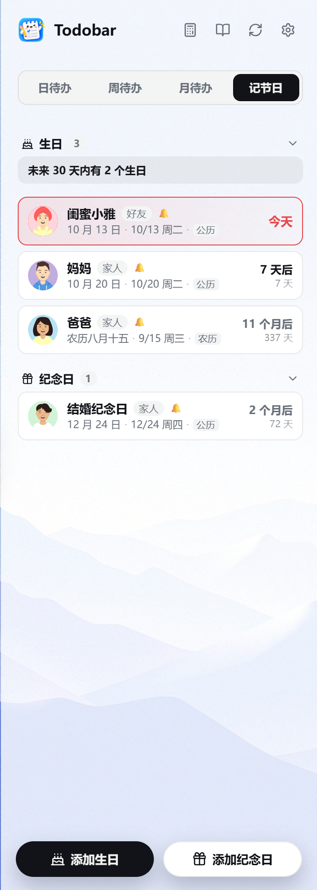
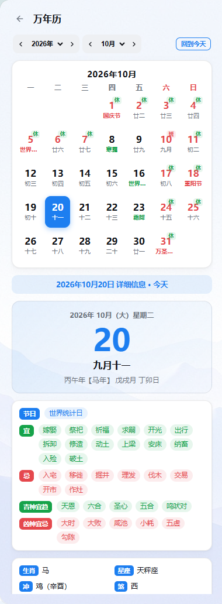
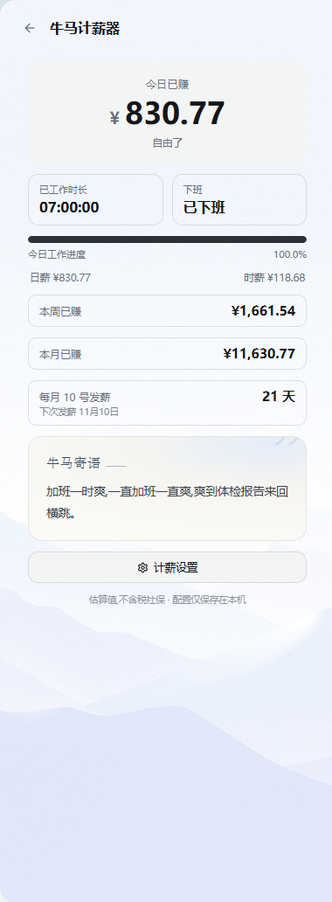
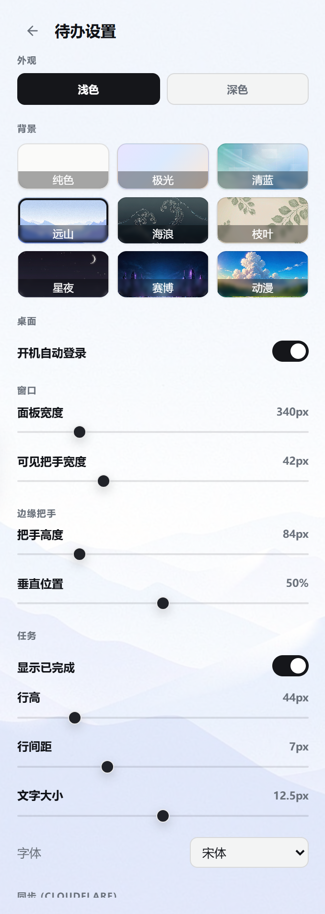

待办事项,
就该贴在屏幕边缘。
TickTask 是一条藏在屏幕右缘的极简待办栏:平时只占一条细边,几乎不占用任何桌面空间,鼠标一划即出、用完自动收回,不打扰任何正在工作的窗口。
日 / 周 / 月视图、万年历节日、生日纪念日提醒、内置计算器、云同步,外观随心换。
Windows 10 / 11 · 64 位 · 约 17 MB · 免费使用 · 无需管理员权限

16:40
2026/10/13
小身材,大能力
不只是一条待办栏:记录、提醒、换算、同步,一件不落。
贴边悬浮,一划即出
平时只显示一条细边把手,不挡任何窗口;鼠标靠近或快捷键即可展开完整待办面板。
日 / 周 / 月 / 节日
按天、按周、按月安排待办,内置万年历与法定节假日,重复事项、子任务、置顶一应俱全。
云端同步
一键同步到云端,换电脑、重装系统数据不丢;本地优先,离线也能正常记录。
内置全能计算器
四则运算、日期差与工作日、年龄计算,还有实时汇率的货币换算与长度重量温度换算。
生日与纪念日提醒
重要日子提前提醒,当天只提醒一次不打扰;待办提醒精确到分钟,再也不会错过。
字体背景随心换
7 种字体、9 种精选背景(远山、星夜、赛博、动漫…),浅色深色双主题,面板宽度行高全部可调。
界面一览
真实应用截图,所见即所得。






-
1
下载安装包
点击上方按钮下载
TickTask-setup.exe。 -
2
双击运行
按安装向导点击"下一步",默认安装到当前用户目录,无需管理员权限。
-
3
开始使用
安装完成后从开始菜单或桌面启动 TickTask,它就会安静地贴在屏幕右缘。
安装提示:安装包暂未进行付费代码签名,首次运行时若出现 "Windows 已保护你的电脑" 提示,请点击 "更多信息" → "仍要运行" 即可正常安装。这是未签名软件的正常提示,不代表文件有问题。
版本更新
持续迭代,每个版本的改动都记录在这里。
-
v0.4.47
最新便利签（桌面便签）功能上线
- 新增「便利签」功能（会员专属）：快捷键一键创建桌面便签，最多同时显示 12 张、总计 50 张上限
- 便签支持勾选划线、增删改、一键转待办；6 色换肤 + 透明度滑条自定义；可钉住置顶、自由拖动、调大小
- 启动恢复：未删除便签关机/重启后按上次位置自动贴回桌面（多屏回原屏）；删除即撕且写墓碑双写，杜绝重启后已删便签复活
-
v0.4.45
截图去全屏 + 重复事项可跳过法定节假日
- 截图顶部操作栏去掉冗余的「全屏」选项（与窗口截取完全一致），选区蓝色边框加粗（线宽 2→4），截图状态更醒目
- 添加事项弹窗新增「跳过法定节假日」开关：重复事项可配置节假日当天不生成，标签自动追加「（节假日除外）」，内置 2024–2026 年国务院法定节假日数据
-
v0.4.43
托盘菜单中文化
- 托盘右键菜单选项由英文改为中文：「打开 / 关闭 TickTask」「设置」「退出 TickTask」，更符合中文用户习惯
-
v0.4.42
窗口开关快捷键支持自定义
- 设置页「窗口」分组新增「打开/关闭窗口快捷键」文本框，交互与截图快捷键完全一致：双击进入编辑、录制组合键、✓/✕ 保存、实时冲突校验、toast 提示
- 新快捷键即时生效并持久保存，重启后仍有效；始终保留 Ctrl+Alt+T 作为备用呼出键，避免误改后无法呼出窗口
-
v0.4.41
截图/贴图体验打磨：消除闪屏弹动 + 贴图穿透控制条
- 彻底消除快捷键触发截图时的开始闪屏与退出截图时的弹动，进入/退出截图过渡无感
- 贴图展示优化：选中贴图显示蓝色边框、未选中显示灰色边框（参考 PixPin），边框带柔光阴影，一眼分辨贴图位置
- 贴图新增鼠标穿透控制条：开启穿透后悬浮独立控制条，支持拖拽移动贴图、调节不透明度、一键关闭，并附操作提示气泡
- 贴图滚轮改为以中心缩放（透明度调节移至 +/- 键与穿透控制条滑条）
- 修复截图/贴图启用开关显示与快捷键注册不同步（重启应用后设置正确回显）
-
v0.4.40
截图大升级：标注工具栏 + 选区拖动 + 贴图修复
- 新增截图标注工具栏：箭头、画笔、矩形、椭圆、序号、文字、马赛克、橡皮擦，支持撤销/清空、多色板与粗细调节
- 确认选区后可整体拖动平移；修复缩放手柄调整后选区外暗罩消失
- 修复贴图失败（坐标取整 + 大图改为内存暂存避免本地存储溢出）；设置页重构：快捷键缩写显示、双击编辑、保存改为 toast 提示、配置更新/重启后自动保留
-
v0.4.38
修复:彻底解决计薪器桌面组件不显示
- 根因:0.4.34 起主窗口承载录音机麦克风授权后,与组件窗口的 WebView2 浏览器参数不一致,导致组件窗口创建被系统拒绝(此前错误被静默吞掉,无法定位)
- 已让组件窗口与主窗口使用完全一致的环境参数,组件创建不再失败,启用即正常显示
- 加固诊断:组件创建失败的原因现写入日志;万一残留死句柄,自动换用备用窗口标识重建,启用后明确告知成功或失败
-
v0.4.37
修复:桌面组件显示与顶栏自适应
- 修复桌面组件启用后可能不显示的问题:启用时组件短暂置顶展示,不再被其它窗口挡住
- 组件启用结果以明确提示告知用户,窗口创建失败不再静默无感
- 顶栏功能入口图标随面板宽度自适应收紧间距,面板最窄时「录音机/计薪器/计算器/黄历/同步/设置」全部完整可见
-
v0.4.36
体验优化:提示文案与组件降级修复
- 精简非会员单日新建上限的提示文案,更短更清晰
- 计薪器页面所有提示显示几秒后自动消失,不再有常驻提示;「桌面组件为会员功能」仅在点击开关时触发
- 修复会员降级(试用结束)后桌面组件的处理:组件走正常关闭路径,开关同步显示为关闭,不再出现「启用中置灰不可点」的割裂状态
- 重新开通会员后可再次启用桌面组件,位置与风格记忆保留
-
v0.4.35
紧急修复 0.4.34 主界面报错
- 0.4.34 安装后主界面可能显示「出现异常,已停止渲染」(React #185 无限重渲染)
- 根因:会员状态订阅的快照函数每次返回新对象,触发 React 无限重渲染
- 修复:快照改为按本地存储原始串缓存,引用稳定后循环消失
- 仅修复此问题,录音机与会员限制功能与 0.4.34 一致
-
v0.4.34
新增录音机 + 会员体系
- 顶部牛马计薪器左侧新增录音入口,二级页含一键录音与录音记录管理
- 音频存为 mp3 保存在「文档\TickTask录音」,仅存本地不上云,可搜索、重命名、备注、定位、删除
- 支持暂停续录,单条最长 2 小时(1 小时 55 分提醒后自动保存);双击即可用系统默认播放器回放
- 麦克风授权自动应答,遇权限问题可一键跳转 Windows 隐私设置;拔麦自动保存,录音不丢
- 试用期结束且未激活时,6 项功能受限:云端上传与恢复、计薪器桌面组件、子任务与下级、单日新建事项(上限 3 条)、待办提醒、新增生日与纪念日
- 受限入口不隐藏、不置灰,点击后提示「此为会员功能,开通会员后可无限制使用」
- 已有数据完整保留:已有子任务、提醒、生日与纪念日仍可查看、编辑和删除,仅禁止新增
- 激活会员或重新登录后立即恢复全部功能,云端同步自动续上
-
v0.4.33
修复计薪组件显示在屏幕外
- 更新工具、拔插副屏或分辨率/DPI 变化后,组件保存的历史位置可能落在可见屏幕之外,导致窗口存在但桌面看不见
- 启动时会校验位置是否仍在任一显示器内,失效则自动居中到桌面中央,不再被藏到屏幕外
-
v0.4.32
弹层体验修复与设置持久化
- 任务「处理日期」的日期选择面板改为自绘月历,完整显示不再被窗口边缘截断
- 提醒时间选择器同步换成同款自绘弹层(日期 + 时/分),完整显示不截断
- 计薪设置改为本地持久化:更新工具后自动恢复,无需重新填写
- 修复自绘弹层背景偶发透明、页面文字透出的显示问题
-
v0.4.31
今日状态体验打磨
- 牛马寄语完整显示,不再截断省略:奶牛萌卡保持 3 行(短句智能同行),小马宽屏一行一句最多 5 行,暖阳三栏一行一句最多 4 行
- 今日状态改为仅点击标题旁铅笔图标弹窗,点卡片其他区域不再误触发
- 动态小字更直观:午休回血显示「正在回血 X 分钟」(已休息时长递增),等饭中为距干饭递减倒计时
-
v0.4.30
桌面组件上新「今日状态」
- 三套桌面组件的「今日已赚」卡片升级为「今日状态」,不再显示金额,薪资隐私不出屏
- 8 种状态按时段自动切换:刚出土 / 疯狂搬砖 / 等饭中 / 午休回血 / 电量耗尽 / 带薪发呆 / 冲刺下班 / 下班自由,时段跟随用户上下班与午休配置
- 动态小字实时变化:距干饭 / 距下班倒计时、已专注时长、已硬撑 / 已发呆趣味计时;吐槽语录每 8 秒轮换
- 「带薪发呆」每天下午 15:00 前后随机出现一次,持续 10 分钟
- 点击状态卡(或标题旁铅笔图标)手动切换状态并持久化,可一键恢复自动切换
-
v0.4.29
桌面组件细节回归参考图
- 奶牛萌卡:花束贴齐下班倒计时卡片右下角(溢出部分被组件边缘自然裁切);寄语气泡加长减高并与奶牛行居中对齐;奶牛与气泡整体右移 8px
- 小马宽屏:小马插图再右移 5px
- 暖阳三栏:寄语卡背景改为参考图的浅奶油底,插画大幅渐隐融合;寄语正文字体继续调大
-
v0.4.28
桌面组件比例微调
- 奶牛萌卡:整体高度压扁(窗口 398→344),奶牛缩小为原来的 60% 且贴顶,寄语框与其等高
- 奶牛萌卡:右下角花束移回下班倒计时卡片右下角
- 小马宽屏:小马插图缩小为原来的 80% 并右移 5px,不再挤占寄语文案
- 暖阳三栏:寄语卡加宽(比右侧卡片宽 15%),寄语正文字体调大
-
v0.4.27
桌面组件细节打磨
- 奶牛萌卡:顶部间距压缩,进度环随卡片高度自适应放大,「今日进度达成」标签紧贴金额下方
- 奶牛萌卡:右下角花束缩小为一半并移出倒计时卡,压在组件右下角(参考图样式)
- 小马宽屏:小马插图放大并水平居中,消除左侧空旷感
- 暖阳三栏:寄语正文改手写体并增加上边距;金额与时分秒数值改为卡片内垂直居中
-
v0.4.26
桌面组件排版精细化校准
- 奶牛萌卡:已赚/倒计时双卡改 4:3 比例,金额卡片内居中,进度标签改「今日进度达成X%」并水平居中
- 奶牛萌卡:进度环加大贴近卡片底部,「加油！马上下班啦！」两行移入圆环内;寄语气泡改手写体三行并收短;右下角改为一束花置于倒计时卡角
- 小马宽屏:整体高度压扁,寄语卡 4:3,文案在小马左侧、「加油！打工人！」在小马上方,右侧双卡压缩且数值间距加大
- 暖阳三栏:整体高度压扁,寄语卡背景与插画统一(消除上白下图割裂感),标题缩小,金额/时分秒水平居中且上边距加大
-
v0.4.25
桌面组件三套样式深度复刻参考图
- 外层升级为半透明磨砂玻璃质感,内层卡片更亮、层次分明(三套样式通用)
- 吉祥物全面升级为 3D 渲染图:小马宽屏(打工人头带+笔记本+书堆+咖啡)、奶牛萌卡(winking 招手奶牛)、暖阳三栏(牛牛伏案场景插画)
- 倒计时改为「数字 + 小时/分钟/秒」一一对应的三列布局,标签直接对齐各自数字
- 暖阳三栏对齐参考图:今日已赚绿色金额+柱状图+工作时长/时薪页脚、倒计时进度条+百分比、寄语卡带日期与牛牛插画
- 修复「下班倒计时」标题折行等排版细节
-
v0.4.24
桌面组件按参考图校准 · 设置页新增样式预览
- 奶牛萌卡宽高比对齐参考图(不再窄高),今日已赚/下班倒计时卡片布局更宽松,倒计时进度环更大
- 奶牛萌卡补齐左上/右下花朵装饰;小马宽屏放大小马吉祥物并加书堆咖啡点缀;暖阳三栏新增日期、今日工作时长、时薪
- 组件不再置顶:不再悬浮盖住其他软件界面,回归普通桌面窗口层级
- 根治四角直角裁剪痕迹:窗口四周留透明边距,圆角与阴影完整渲染
- 设置页桌面组件样式选项改为「预览图 + 文字」卡片,所见即所得
-
v0.4.23
桌面组件样式重设计 · 修复网页框
- 修复桌面组件外围出现「网页框」(白底+滚动条)的问题,整卡铺满窗口无边框
- 三套组件样式按参考图 1:1 复刻:奶牛萌卡(粉紫奶油)/ 小马宽屏(浅蓝玻璃)/ 暖阳三栏(奶油白),各有专属吉祥物插画
- 组件默认居中于主窗口所在屏幕,可拖动记忆位置,自动避让右缘 Dock 把手区
-
v0.4.22
修复桌面组件导致的点击无响应
- 修复启用桌面组件后,主程序左侧把手点击无响应的问题(根因:主线程内联创建窗口死锁,现改为独立线程创建)
- 修复桌面组件不显示、但进程中存在的问题(同一根因,组件窗口渲染树未挂载完成)
- 组件现默认居中于主窗口所在屏幕桌面中央,切换风格即时生效、无需重建窗口
-
v0.4.21
牛马计薪器 · 桌面组件
- 新增独立桌面悬浮组件:常驻显示「今日已赚 / 下班倒计时 / 今日寄语」三字段
- 三种风格可选(杂志标签 / 竖排卡片 / 横条胶囊),默认杂志标签
- 启用后悬浮桌面中央,可自由拖动并记忆位置,自动避开右缘 Dock 把手区
- 配置随计薪设置本地保存,开机自启自动还原
-
v0.2.5
会员状态同步与体验优化
- 修复:后台激活/兑换激活码后,工具端会员状态未即时更新的问题——启动与打开设置页时自动同步云端状态
- 管理后台:本地缓存优先加载,切换菜单无需等待;图表悬浮显示数据浮窗
-
v0.2.4
激活码兑换与数据埋点
- 设置页新增激活码输入:兑换后升级会员,永久全功能
- 匿名数据埋点:启动 / 页面访问 / 功能点击,用于产品改进(不含任何任务内容)
- 本地队列批量上报,断网不丢,恢复后自动补发
v0.2.3
体验优化与本地存储
- 头像 / 昵称修改提示移至页面顶部并自动消失
- 保存昵称头像改为本地即时生效 + 云端异步静默同步
- 同步设置精简:去掉启用开关,自动同步关闭时收起间隔选项
- 官网版本记录默认仅显示 3 条,可展开查看全部
- 新增本地数据存储路径设置,可自定义数据目录
v0.2.2
同步与账号体验优化
- 头像 / 昵称修改成功改为 toast 提示
- 退出登录增加确认弹窗
- 同步去掉手动配置的服务地址与访问令牌,登录即用
- 关闭每次增删改的即时同步,改为定时 + 手动同步
- 数据按用户严格隔离
v0.2.1
账户中心升级
- 设置页账户区改为头像 + 昵称布局,未登录显示默认头像与「未登录」
- 登录 / 注册 / 找回密码统一为弹窗,支持自定义头像与昵称
- 修复获取验证码偶发 500 的建表问题,同步服务更稳定
v0.2.0
账号系统上线
- 新增账号系统:邮箱注册 / 登录 / 修改密码
- 云同步改用登录令牌,数据按账号隔离,无需手填同步令牌
- 设备管理:最多 3 台设备,支持远程解绑
v0.1.9
同步修复与体验优化
- 修复老版本云端数据库导致的同步失败
- 同步失败时显示服务器返回的具体原因
- 下载页界面一览支持大图横向滚动浏览
v0.1.6
全新外观与同步优化
- 全新应用图标与官网配色
- 设置页新增赛博、动漫两款精选背景
- 自动同步间隔可选 5 分钟至 12 小时
- 官网新增版本更新记录页面
v0.1.5
首个公开版本
- 贴边悬浮待办栏,鼠标一划即出
- 日 / 周 / 月视图与万年历节假日
- 生日与纪念日提醒
- 内置计算器:计算、日期、汇率换算
- 多设备云同步
- 自定义字体与背景
常见问题
TickTask 是免费的吗?
目前完全免费使用,全部功能(含计算器、云同步、自定义外观)均无限制。
我的数据存在哪里?安全吗?
数据默认保存在你自己的电脑上(本地优先);开启云同步后才会加密传输到你自己的云端服务,不上传给任何第三方。
为什么安装时 Windows 会弹出安全提示?
因为安装包还没有购买付费的代码签名证书。SmartScreen 提示是所有未签名软件都会遇到的,点击"更多信息 → 仍要运行"即可继续安装。
支持哪些系统?会常驻后台拖慢电脑吗?
支持 Windows 10 / 11(64 位)。TickTask 采用原生框架打造,内存占用极低,平时只渲染一条细边,几乎不消耗资源。
之后会有 macOS 版吗?
在计划中。应用基于跨平台框架开发,macOS 版本会稍后推出,敬请期待。